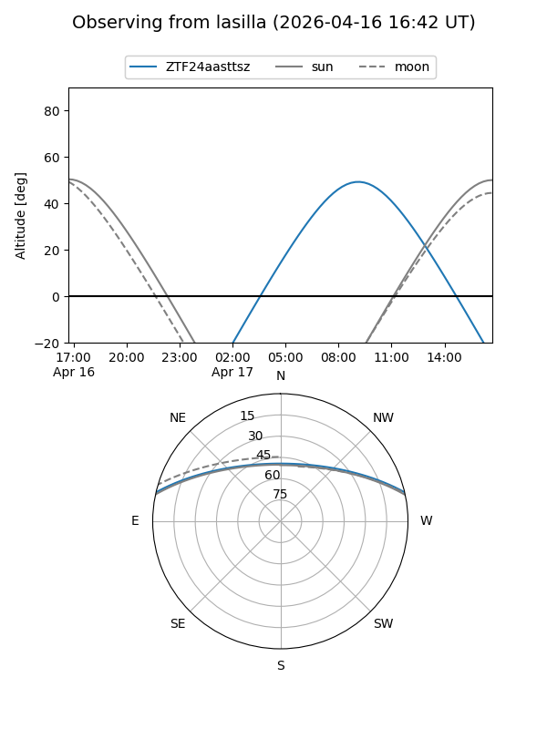
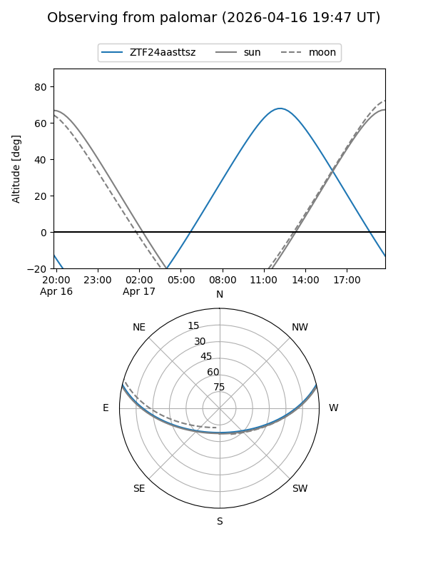

ZTF24aasttsz
Target ZTF24aasttsz at 2026-04-17 13:24
Aliases and brokers:
FINK: link
Lasair: link
ALeRCE: link
alt names
ZTF24aasttsz (ztf,fink_ztf)
Coordinates:
equatorial (ra, dec) = 271.2704,+11.42444
equatorial (HMS+DMS) = 18:05:04.90,+11:25:27.98
galactic (l, b) = (38.0793,+15.40067)
Flags:
Photometry:
last ztfg=18.04, ztfr=17.60
1 ztfg, 1 ztfr detections
Lightcurve
Visibility


Additional plots